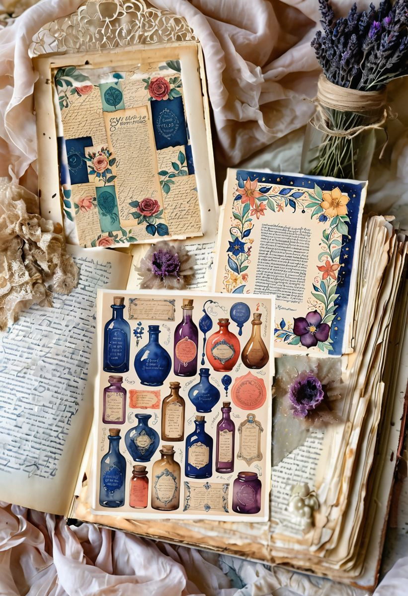

Most junk journal advice begins with tea-stained paper and ends in sepia. Lovely — but some of us open a journal the way we open a paint box: wanting everything, all at once, preferably louder. If that's you, this one is yours.
This is a theme we call Vivid Medley in the studio — a collection of watercolor pages where a peacock-blue bird sits on a flowering branch, mosaic triangles tumble like confetti, moons and stars crowd a midnight sky, and at least one tiny dragon refuses to behave. It's maximalism, but the painted kind: layered, saturated, and still soft at the edges because watercolor never really shouts — it sings in a bigger voice.
The palette (steal it, truly)
Every shade below is pulled straight from the actual pages — not a mood board approximation. Screenshot it, save it, match your washi tape to it.
A trick that keeps maximalist pages from tipping into noise: let Deep Navy do the heavy lifting. Use it for journaling ink, frames, and edges, and the brighter shades will look intentional instead of accidental. Coral is your exclamation mark — one or two per spread is plenty.

Seven ways to use a loud theme without losing the page
1. One hero, many whispers. Pick a single showpiece image — the bird, say — and let it own the page. Tear everything else into strips and fragments so nothing competes with it.
2. The mosaic border. Cut a patterned page into small squares and edge your spread with them, like tiles around a doorway. It uses up the "too pretty to cut" pages and frames your writing beautifully.
3. A dark page for contrast. Maximalist kits usually hide one or two midnight-sky pages. Use one as a full background and mount lighter pieces on it — instant depth, and the colors glow against it.
4. Rainbow tabs. Slice leftover strips into little tabs for the fore-edge of your journal, ordered like a spectrum. Every time you close the book, it looks like it swallowed a rainbow — because it did.
5. Journal on the quiet shades. Blush and sage pages are your writing rooms. Save the loud pages for pockets, tags, and layers, and keep the calm ones for the words.
6. A pattern-only pocket page. Fold one full patterned sheet into a pocket, tuck three coordinating tags inside. It's the junk journal equivalent of a matched luggage set.
7. Repeat one motif three times. A star, a petal shape, a triangle — echo it in three places across the spread. Repetition is what makes "a lot going on" read as a composition instead of a collision.
The pages I used here
Everything in this post comes from this kit — two hundred printable pages of the palette above. Print on ordinary paper for tearing and layering, or on cardstock for covers and tags.
And if your heart runs quieter than this — toward pressed flowers and old handwriting — wander through the rest of the journal; the gentler themes live there. Either way: leave your pages a little crooked. That's how anyone can tell a person made them.